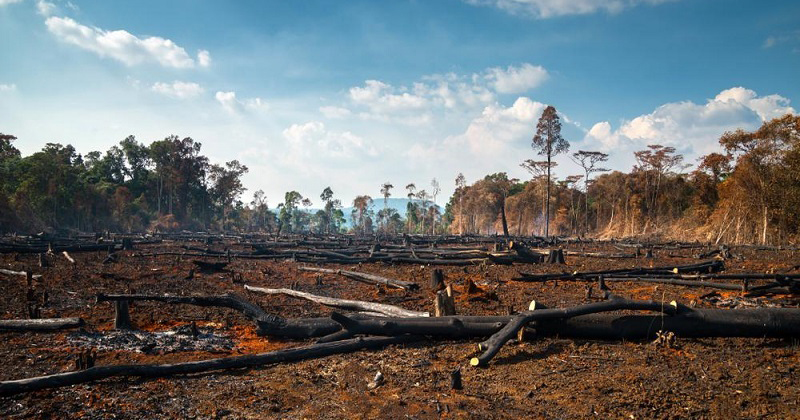

essays, opinions, and more.
the thinker
The Conversation Around the Environment Needs to Change
September, 2021
Opinion
The policy prescriptions often proposed for the current global environmental degradation problems are influenced by popular discourses and narratives. These discourses and narratives usually tend to present an oversimplified explanation of some of the most pressing issues. Such oversimplifications are an attempt to present a common language and understanding of environmental problems to formulate globally shared environmental policies. These explanations, while convenient to articulate, are not the most ideal for geographical regions which have their unique sets of challenges. There is not a single explanation for environmental degradation problems and, therefore, a single solution cannot uniformly produce the same results when applied in different geographical and cultural settings. Ignoring other variables that might be contributing to the environmental harms, such as the local economy and social factors, will produce deficient and apolitical explanations. The environment is sensitive to a multitude of factors, some of which are very distinct and specific to the geography and demography of its surrounding.
Much has been said about the structure and nature of such discourses that dominate our understanding of global environmental problems. By drawing parallels between global environmental management discourses and populist discourses, one can see how our understanding of environmental issues can drive very different policy fixes. The global environmental management discourse, for example, calls for external policy interventions and puts most of the blame on the locals for causing environmental degradation. Such a discourse is supported by policies that focus on changing the behavior of the locals and ‘educating’ them about environmental concerns. The locals are the culprits because they fail to take responsibility to restrict and fix environmental degradation problems on their own. They act irresponsibly by cutting down trees and by converting arable land into construction sites for houses and hotels. The local communities have turned ‘greedy’ they argue. Therefore, the policy fixes often focus on best managing the local resources. The local communities are engaged to educate them on environmental planning and management.
The populist discourse, on the other hand, depicts external actors and interventions as the cause of environmental degradation and exploitation. These discourses will produce policies that focus on keeping a check on external factors such as industrialists. External factors, as opposed to the local communities, are blamed for environmental degradation. Tourists and businesses become the main targets for the critics. Such discourses lead to the formulation of policies that aim to restrict external business and the flow of tourism. In Hunza, for example, the unbridled construction of hotels and restaurants is blamed on external factors such as the unrestricted flow of tourists into the region. Furthermore, external investors are held liable for financing the construction of new hotels and resorts in previously pristine and untouched areas. The policy fixes under the populist discourse focus on conservation and restricting access to certain geographical regions. They also focus on policies that are designed to keep a check on external factors such as tourists.
A closer look at some of the environmental issues, such as deforestation, desertification, biodiversity utilization, and climate change, reveals how these contrasting discourses drive our understanding and how they inform policymakers to formulate different policy instruments. There are also concerns about who produces and reproduces these discourses and if they sufficiently take into account the local realities. There often is a disconnect between popular environmental explanations and the complex local realities that such explanations tend to ignore. While both discourses have some truth to them, they tend to oversimplify the problem and provide a one-sided solution.
In the popular narrative, deforestation in the Gilgit-Baltistan region is blamed on human settlement and rapid population growth. The local communities are blamed for the widespread destruction of the forests through the shifting of cultivation and rapid construction. This narrative has been adopted by aid agencies to fund projects that aim to change the behavior of the local population towards more ‘sustainable’ alternatives. Although deforestation is a real issue, the explanations for its causes and policy fixes ignore ground realities and local context. For example, population growth has contributed to deforestation in many places, but in other places, it has contributed to afforestation and soil conservation. There are numerous examples within the Gilgit-Baltistan region where the population growth has contributed to plantations in previously barren areas. It is important to realize that people with limited resources will look for ways to maximize their utility and will apply tools that make sense in the local context. The livelihoods of many of these communities are linked to the resources which are directly available to them. Political explanations, therefore, present an incomplete picture of the problem and often exaggerate the issues that require a deeper understanding.
A more balanced approach is possible, only if the policy-making institutions were not so distanced from the highly vulnerable local communities. Both local, as well as external factors, need to be considered when formulating environmental policies. Demonizing one or the other will lead to ineffective solutions and delay the urgent need for action. The interplay between the two factors is essential in understanding the ground realities. The two factors influence each other. For example, I was walking down our street last summer when I noticed a lot of plastic trash on the way. We often blame external factors, in this case the tourists, for the increased amount of trash in our surroundings. However, hardly any tourists ever go up and down our street. The trash was being thrown out by the locals. Most of the trash was from consumer products such as biscuits and chips. It must have been the local kids who were callously throwing trash after finishing their unhealthy snack. The ever presence of trash on our streets is contrary to the popular belief that locals are not responsible for the current trash problem. But the question that I am interested in is how did the locals end up adopting this behaviour? Were they influenced by any external factors or is it simply a result of local mismanagement?
I believe that local communities as well as external factors interact closely with the environment and are both responsible for the resulting degradation. Better policies and solutions are required which take a holistic rather than a fragmented approach to environmental issues.
Share the Article
Read Next
OPPORTUNITIES FOR IMPROVING THE WELL-BEING OF THE RURAL POPULATIONS
Improving the well-being of rural communities is one of the most important challenges faced by the developing world today.